Incastro Turni
Il turno del mese, senza rompicapo.
Inserisci i desiderata dei colleghi, premi Genera: Incastro Turni propone un turno che rispetta le regole del reparto e distribuisce con equità notti, festivi e weekend. Tu controlli, ritocchi e pubblichi.
Per Windows e Mac · si installa senza permessi di amministratore · si aggiorna da sola
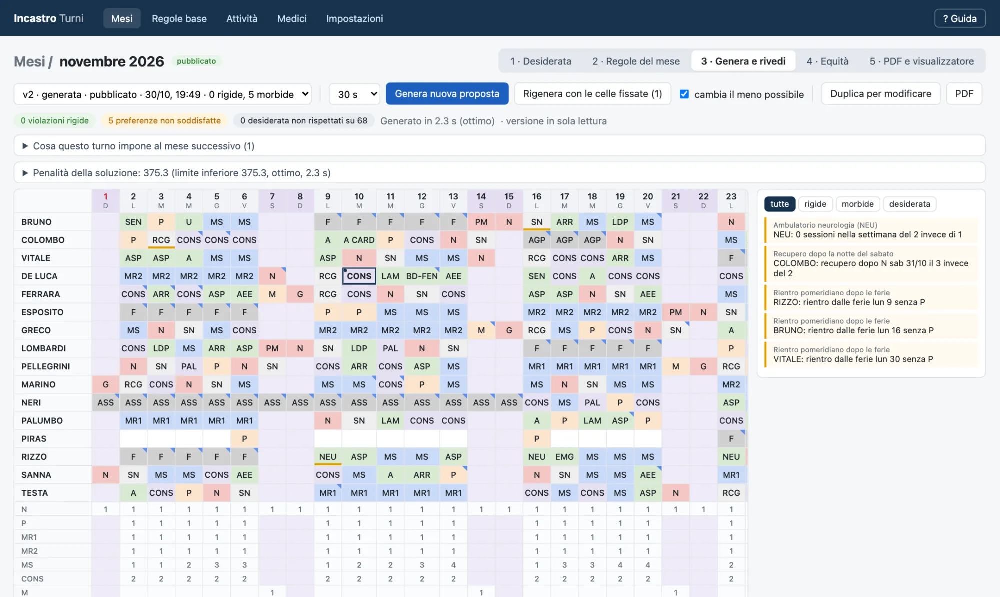
Come funziona
Dal foglio dei desiderata al PDF firmato. In sei passaggi.
Le regole del reparto si inseriscono una volta sola. Ogni mese restano solo le cose che cambiano davvero.
- Apri il meseUn clic sulla pagina Mesi.
- DesiderataImporta il solito foglio Excel o scrivili in griglia.
- Regole del meseAmbulatori che partono o si fermano, eccezioni.
- GeneraCirca 30 secondi per un turno completo.
- ControllaZero violazioni rigide? Il turno è in regola.
- PubblicaPDF per l'amministrazione e link per i telefoni.
Funzioni
Tutto quello che serve per il turno. Niente di più.
I desiderata, dal foglio di sempre.
Ferie, malattie, «niente notte il 14», «vorrei il pomeriggio il 25»: importa il foglio Excel con cui li raccogli già, oppure scrivili direttamente nella griglia. Ogni cella si colora secondo come è stata capita.
- Assenze, «NO» vincolanti e richieste di turno
- I testi non riconosciuti sono segnalati, mai ignorati in silenzio
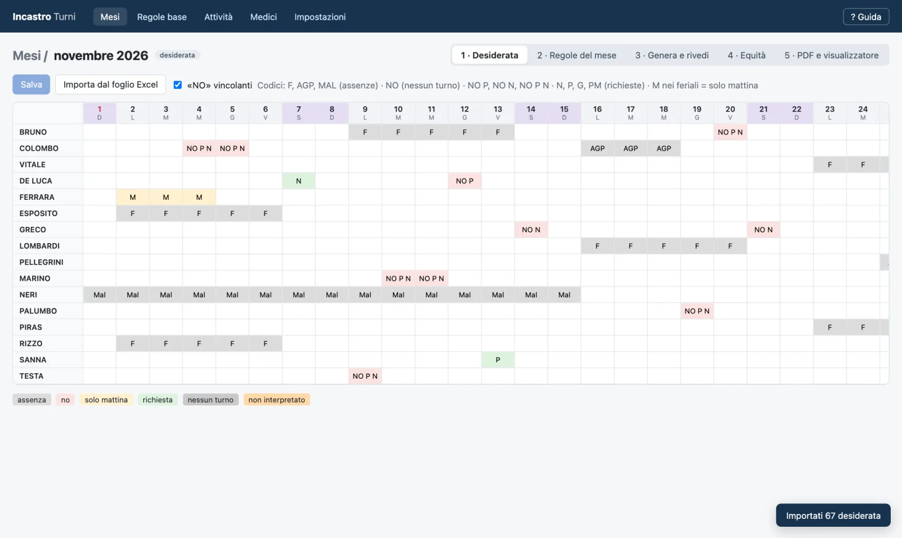
Un clic. Un turno completo.
Un motore di ottimizzazione a vincoli (Google OR-Tools) valuta moltissime combinazioni e sceglie la migliore: coperture, notti e smonti, recuperi, ambulatori, reparto, weekend, rispettando i desiderata.
- Regole rigide sempre rispettate, preferenze quando possibile
- Continuità con il mese precedente: smonti, recuperi, settimane a cavallo
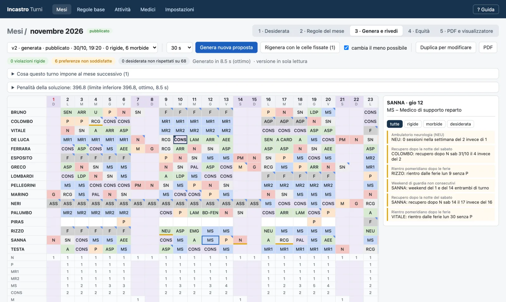
Correggi a mano. Il resto si riadatta.
Il direttore chiede una modifica? Cambia la cella, fissala e premi «Rigenera»: il programma ricalcola il resto del mese tenendo ferme le tue scelte. Ogni modifica è ricontrollata subito da un validatore indipendente.
- Versioni numerate, si torna indietro quando serve
- Ogni violazione spiegata, giorno per giorno
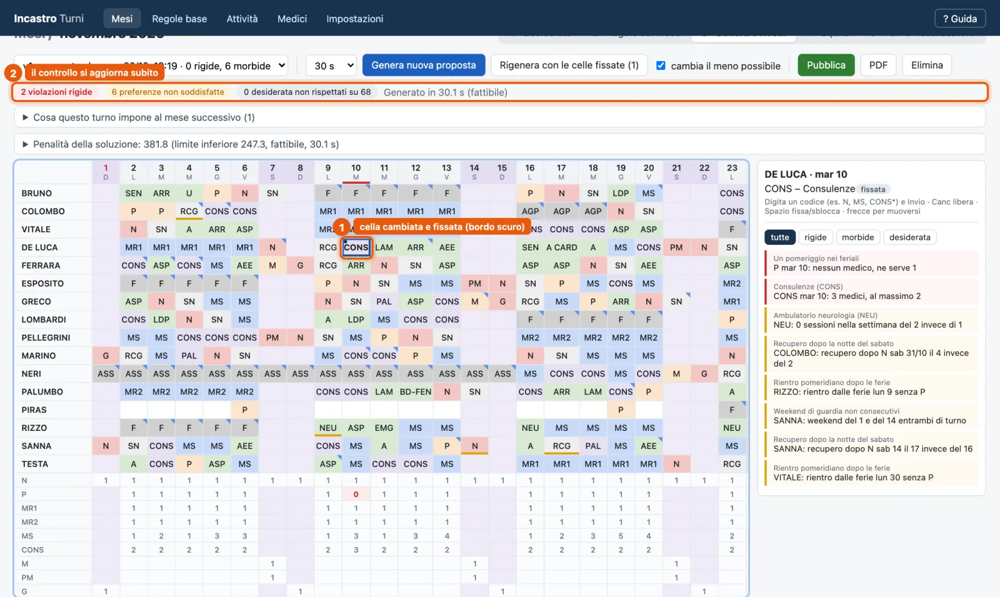
Equità che ha memoria.
Notti, festivi, sabati, pomeriggi: il carico è distribuito in proporzione ai giorni di presenza e tiene conto dei mesi precedenti. Chi ha fatto più notti il mese scorso, ne fa qualcuna in meno questo mese.
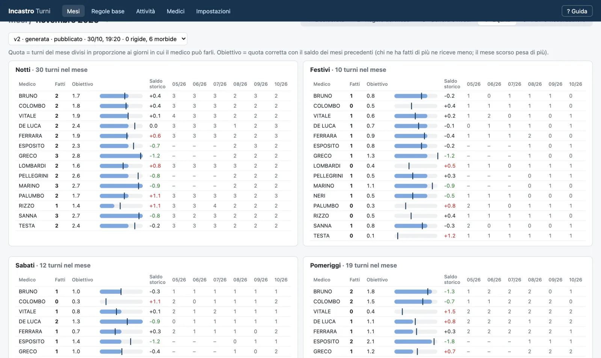
Le regole del reparto. Mese per mese.
Le regole stabili restano; ogni mese aggiungi solo le eccezioni: un ambulatorio che parte, uno che si ferma, un collega in affiancamento. Moduli guidati, senza scrivere codice.
- Coperture, idoneità, sequenze, recuperi, blocchi settimanali
- Colleghi che arrivano o lasciano a metà mese
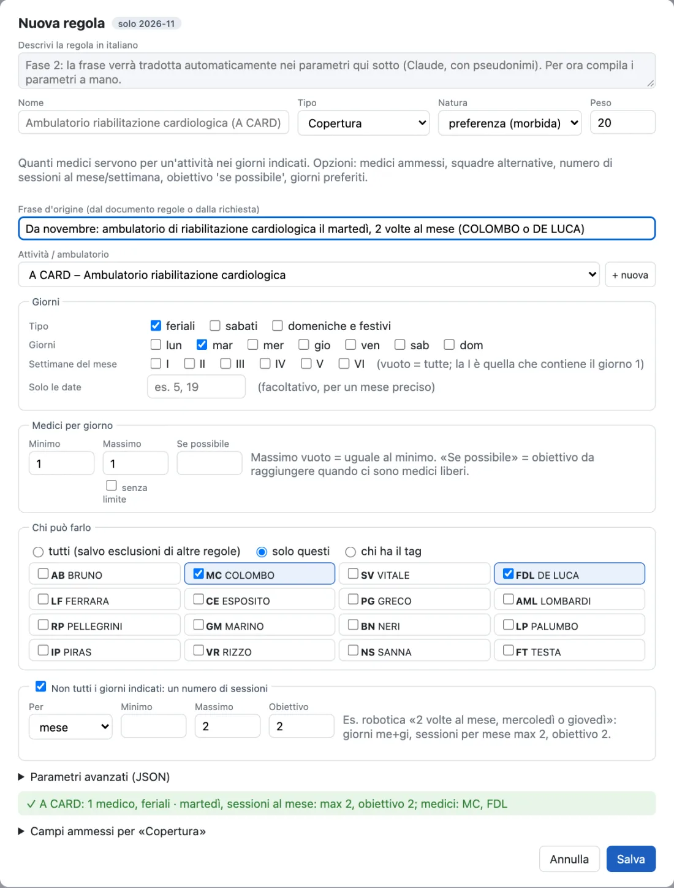
Se è impossibile, ti dice perché.
Troppe ferie lo stesso giorno? Invece di un turno sbagliato ottieni una spiegazione chiara: quale giorno, quale regola, quante persone mancano.
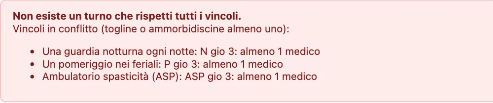
Il PDF, pronto da firmare.
Griglia del mese con legenda, spazi per le firme del responsabile e del direttore e riepilogo per collega. Da stampare o inviare all'amministrazione.
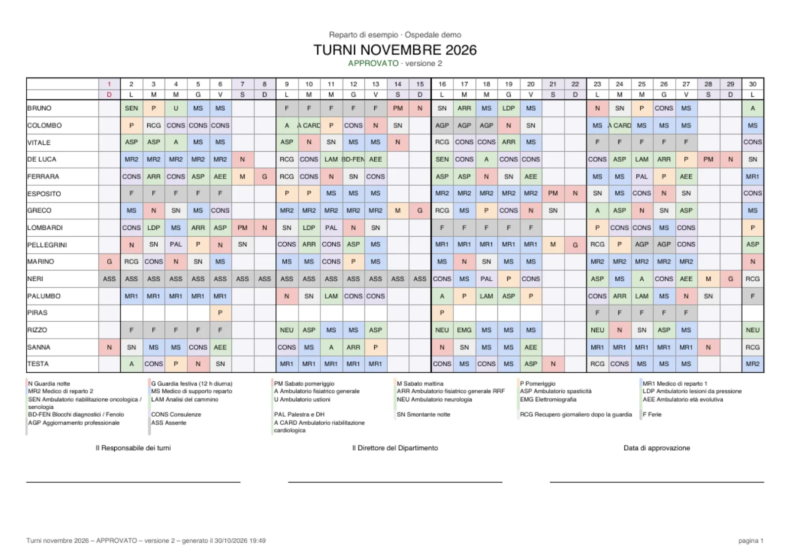
Pensata per chi fa i turni
Semplice da installare. Rispettosa dei dati.
I dati restano sul tuo computer
Nomi, regole e turni non vanno su nessun server: niente account, niente cloud. Funziona anche senza Internet.
Windows e Mac
Si installa nella cartella dell'utente: non servono permessi di amministratore.
Si aggiorna da sola
Le nuove versioni arrivano in automatico, scaricando solo le differenze.
Copie di sicurezza
Una copia automatica al giorno e un archivio da esportare per cambiare computer.
Medici, infermieri, tecnici
Nata per un reparto ospedaliero, adatta a qualunque équipe sanitaria con turni, guardie e ambulatori.
App per il telefono
Il turno in tasca. Per tutti i colleghi.
Pubblicato il turno, Incastro Turni prepara un link cifrato da mandare su WhatsApp o per e-mail. Ognuno lo apre sul telefono e vede i suoi turni: oggi e domani, il mese, chi c'è in reparto.
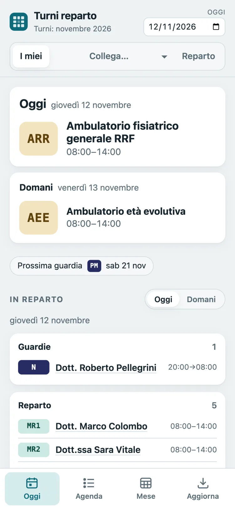
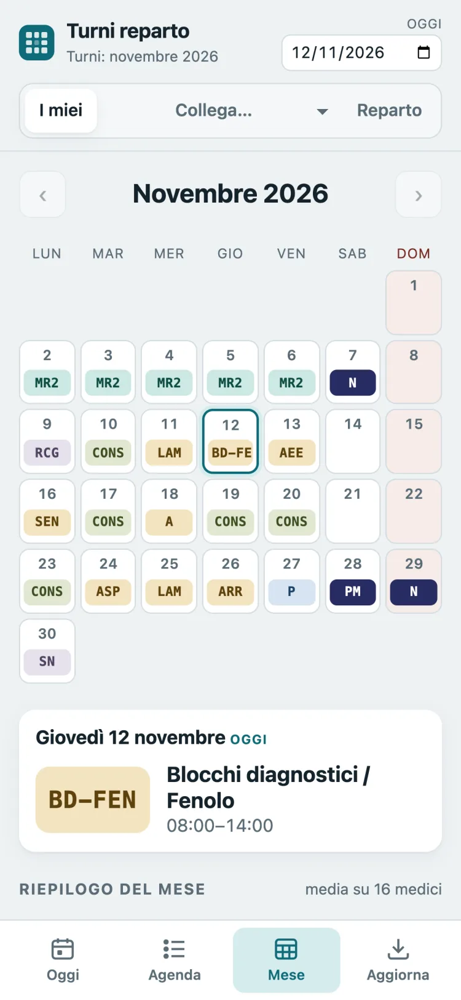
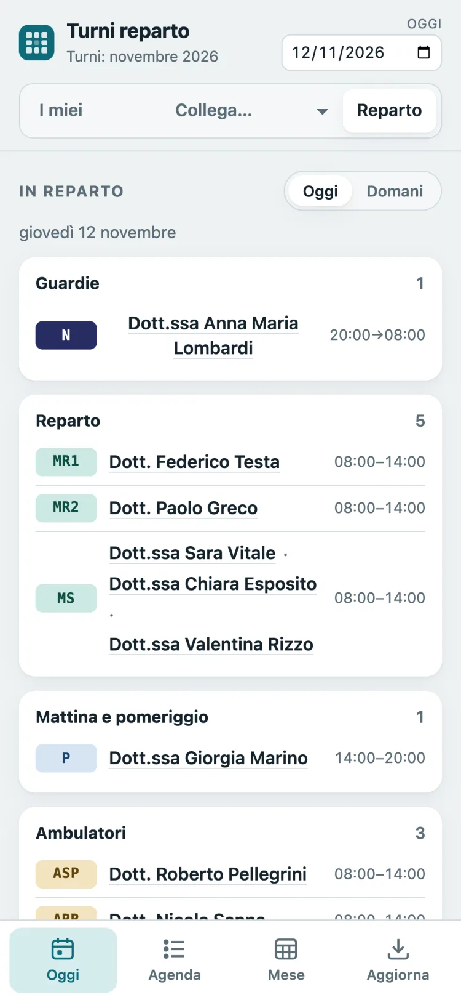
Niente da installare
Si apre nel browser; chi vuole la aggiunge alla schermata Home come un'app.
Link cifrato
I turni viaggiano cifrati dentro il link: senza il codice del reparto sono illeggibili.
Dati solo sul telefono
I turni non passano da nessun server e restano disponibili anche offline.
Nel tuo calendario
Filtra i tuoi turni o quelli di un collega ed esportali nel calendario.
Video
Il turno del mese in quattro minuti.
Dalla creazione del mese alla pubblicazione, sull'app vera. Per i dettagli c'è la guida completa.
Primo avvio su Windows
L'app non è ancora firmata digitalmente, quindi Windows mostra un avviso.
- Apri il file scaricato.
- Se compare «Windows ha protetto il PC»: Ulteriori informazioni → Esegui comunque.
- L'app si installa e compare nel menu Start.
Primo avvio su Mac
Il Mac blocca il pacchetto la prima volta perché non è notarizzato da Apple.
- Apri il file
.pkge premi Fine nell'avviso. - Impostazioni di Sistema → Privacy e sicurezza → Apri comunque.
- Nell'installatore scegli Installa solo per me.
Un progetto personale
Incastro Turni è un progetto personale, sviluppato nel tempo libero.
Il software è fornito così com'è, senza garanzie di alcun tipo. L'autore non si assume responsabilità per l'uso che se ne fa né per i turni prodotti: ogni turno va sempre controllato e approvato da chi ne ha la responsabilità.
Per ora non è previsto un supporto ufficiale. Problemi, dubbi e idee si possono segnalare nella pagina delle segnalazioni su GitHub: le leggo volentieri, senza promesse sui tempi di risposta.
Nelle immagini e nel video nomi, sigle e reparto sono di fantasia.